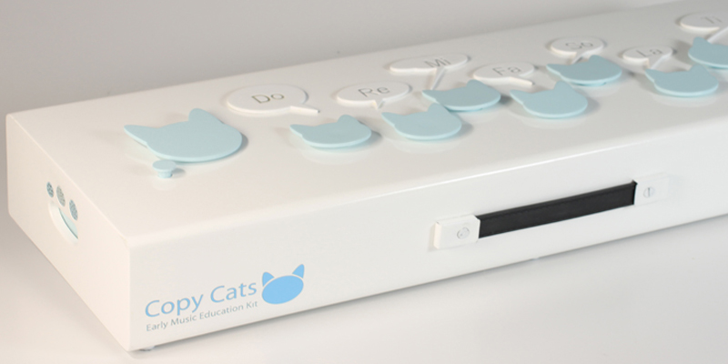

From boosts in IQ scores to improvements in self esteem, music is a valuable activity that can contribute immensely to the development of a child. Copy Cats is an early education tool that brings playtime and learning together in the form of interactive stories, or "cat-tales," introducing kids to basic music elements such as singing, playing, listening, and even composing. I don’t even think I could resist pushing those cute kitty-cat-buttons.